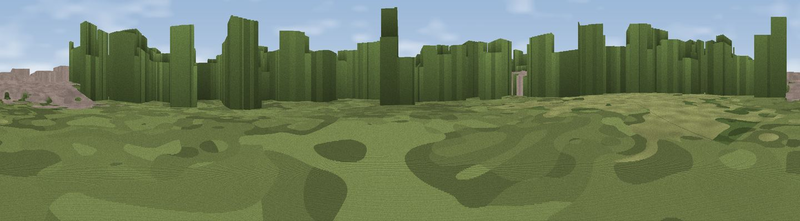

Viewpoint near Wimbledon
#45573 in England · top 83% of its area beats it · near WimbledonWhere it is
The exact computed spot (TQ 25013 72235). Click the marker for map links.
The view, rendered

A 360° render of this exact spot computed from the terrain model, tree cover and land cover — summer colours, afternoon light, calibrated against photographs of famous viewpoints. Real trees, hedges and buildings will differ in detail.
The panorama
Grey silhouette: terrain skyline in each direction (720 bearings, Earth curvature and refraction included). Dashed green: skyline with trees (+15 m) and buildings (+8 m) as obstacles. Blue strip: how far the ground is visible on each bearing.
Where the view opens
Wedge length = distance to the farthest visible ground on that bearing (vegetation-aware). Rings at 10, 25 and 50 km.
What fills the view
42% woodland · 31% built-up · 16% grassland · 11% water
Angular shares of the visible panorama (visual magnitude), not map area. Landscape diversity 0.55 (0–1 Shannon).
Key numbers
More beautiful places nearby
The staircase of upgrades: each row has a higher view potential than everything closer. Driving times are estimates from straight-line distance, calibrated against real road routing — check an actual route before setting out.
| Place | Direction | Drive | Score |
|---|---|---|---|
| Putney Heath | WNW · 2 km | ~6 min | 27.9 |
| Viewpoint near Beddington Corner | SE · 6 km | ~13 min | 31.5 |
| Viewpoint near Richmond | W · 6 km | ~13 min | 38.3 |
| Viewpoint near Richmond | W · 6 km | ~14 min | 43.7 |
| Viewpoint near Sydenham | E · 10 km | ~20 min | 48.5 |
| Viewpoint near Catford | E · 11 km | ~20 min | 51.4 |
| Harrow on the Hill | NNW · 18 km | ~31 min | 60.7 |
| Viewpoint near Chaldon | SSE · 19 km | ~33 min | 66.7 |
51.43533, -0.20291 · source: osm viewpoint · position refined by local search. Computed location — check access rights before visiting.